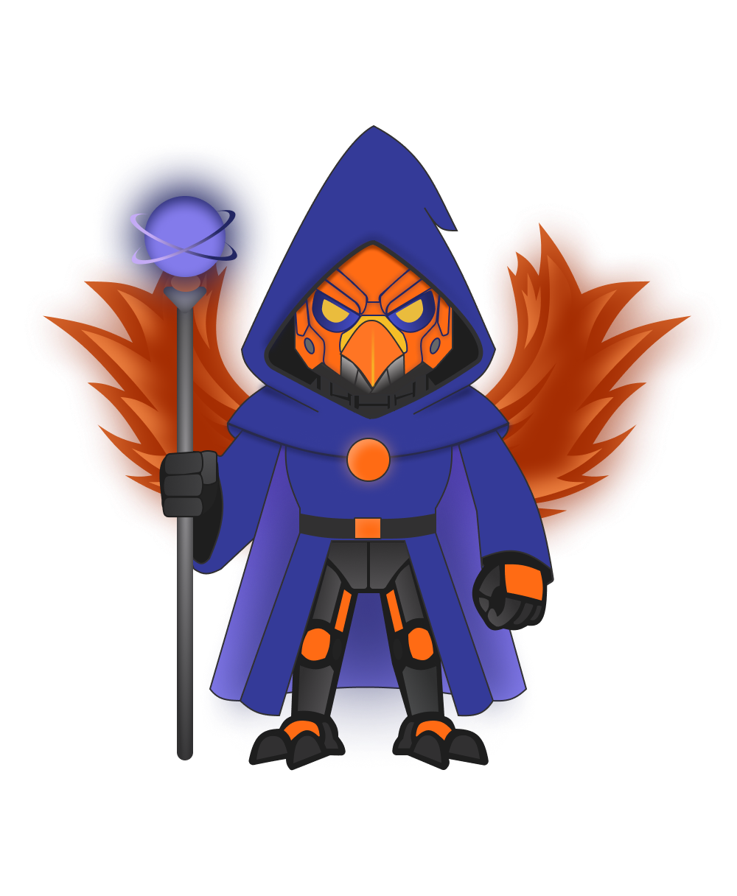

Tim Pengembang

Nadilah
System Analyst
Alya Darwanti
Web Developer
Membantu kelompok tani mengelola distribusi pupuk secara transparan dan efisien.
Petani Terdaftar
Kelompok Tani
Distribusi Tepat Sasaran
PupuKita adalah sistem informasi yang membantu kelompok tani dalam mengelola distribusi pupuk secara digital. Sistem ini dirancang untuk meningkatkan transparansi, efisiensi, dan akurasi dalam pencatatan pupuk bersubsidi.
Petani dapat melihat sisa kuota pupuk secara real-time.
Admin mencatat distribusi pupuk tanpa sistem manual.
Riwayat distribusi pupuk tercatat dan dapat dipantau.
